Basic Operations#
In this tutorial, we introduce the basic operations of proxies with cfr.
[1]:
%load_ext autoreload
%autoreload 2
import cfr
print(cfr.__version__)
0.6.0
Load the PAGES2k network#
[2]:
pdb = cfr.ProxyDatabase().fetch('PAGES2kv2')
pdb
[2]:
<cfr.proxy.ProxyDatabase at 0x2b8656df0>
Once the ProxyDatabase is created, we have ProxyDatabase.records as a dictionary of ProxyRecord.
[3]:
i = 0
for pid, pobj in pdb.records.items():
print(pid, pobj)
i += 1
if i >= 5:
break
NAm_153 <cfr.proxy.ProxyRecord object at 0x2b8676460>
Asi_245 <cfr.proxy.ProxyRecord object at 0x2b8676220>
NAm_165 <cfr.proxy.ProxyRecord object at 0x2b8676eb0>
Asi_178 <cfr.proxy.ProxyRecord object at 0x2b8676ee0>
Asi_174 <cfr.proxy.ProxyRecord object at 0x2b8676e80>
Slice a ProxyDatabase by index#
When the index is a slice, we get a subset of the ProxyDatabase:
[4]:
fig, ax = pdb[4:10].plot()

When the index is an int, we get a ProxyRecord instead:
[5]:
fig, ax = pdb[100].plot()

When the index is a proxy ID in str, we get a ProxyRecord as well:
[6]:
fig, ax = pdb['Ocn_065'].plot()
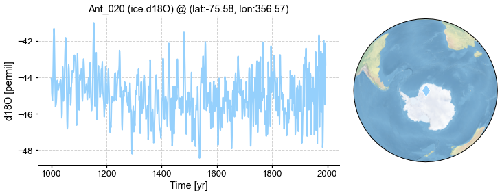
Slice a ProxyRecord#
[7]:
pobj = pdb.records['Afr_012']
fig, ax = pobj.plot()
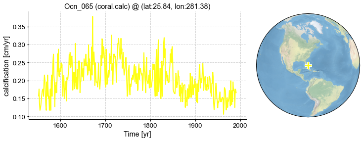
We may slice the record using the slice() method:
[13]:
fig, ax = pobj.slice([1900, 1980]).plot()
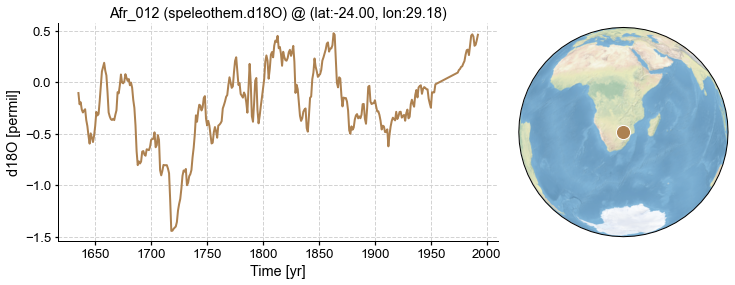
We may also use a slice with str to indicate a specific year range:
[15]:
fig, ax = pobj['1900':'1980'].plot()
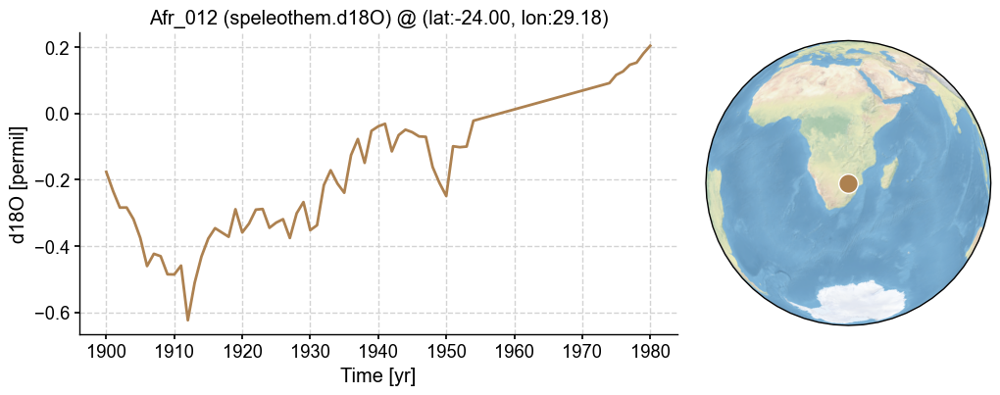
… or even add a step:
[16]:
fig, ax = pobj['1900':'1980':'5'].plot()
fig, ax = pobj['1900':'1980':5].plot()
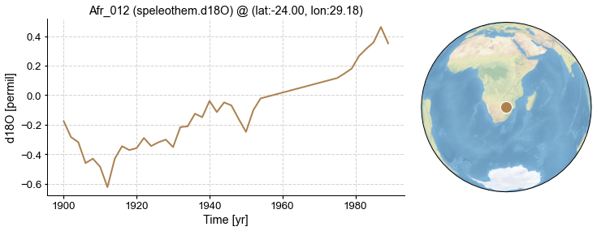
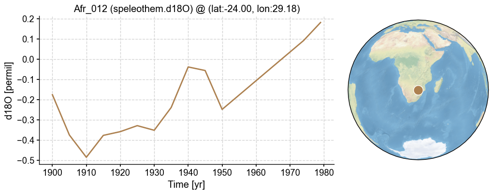
Add several ProxyRecords together to form a ProxyDatabase#
[17]:
pdb_sub = pdb.records['NAm_153'] + pdb.records['Afr_005']
pdb_sub.records
[17]:
{'NAm_153': <cfr.proxy.ProxyRecord at 0x2bc098ca0>,
'Afr_005': <cfr.proxy.ProxyRecord at 0x2bd3a6e80>}
Add a list of ProxyRecords into an existing ProxyDatabase#
[18]:
pobj_list = list(pdb.records.values())[:5]
pdb_sub = cfr.ProxyDatabase()
for pobj in pobj_list:
pdb_sub += pobj
pdb_sub.records
[18]:
{'NAm_153': <cfr.proxy.ProxyRecord at 0x2bcf14940>,
'Asi_245': <cfr.proxy.ProxyRecord at 0x2bcf14cd0>,
'NAm_165': <cfr.proxy.ProxyRecord at 0x2bd2ee640>,
'Asi_178': <cfr.proxy.ProxyRecord at 0x2bd2ee4f0>,
'Asi_174': <cfr.proxy.ProxyRecord at 0x2b8676e80>}
Merge several ProxyDatabases#
[19]:
pdb_sub1 = cfr.ProxyDatabase()
pobj_list = list(pdb.records.values())[:5]
pdb_sub1 += pobj_list
pdb_sub2 = cfr.ProxyDatabase()
pobj_list = list(pdb.records.values())[10:15]
pdb_sub2 += pobj_list
pdb_sub = pdb_sub1 + pdb_sub2
pdb_sub.records
[19]:
{'NAm_153': <cfr.proxy.ProxyRecord at 0x2bd2eef40>,
'Asi_245': <cfr.proxy.ProxyRecord at 0x2bd2eefa0>,
'NAm_165': <cfr.proxy.ProxyRecord at 0x2bd2ee940>,
'Asi_178': <cfr.proxy.ProxyRecord at 0x2bcf256a0>,
'Asi_174': <cfr.proxy.ProxyRecord at 0x2bd2d73a0>,
'NAm_102': <cfr.proxy.ProxyRecord at 0x2b8676cd0>,
'NAm_046': <cfr.proxy.ProxyRecord at 0x2b8676d30>,
'Ocn_065': <cfr.proxy.ProxyRecord at 0x2b8676d60>,
'Asi_242': <cfr.proxy.ProxyRecord at 0x2b8676c10>,
'Asi_170': <cfr.proxy.ProxyRecord at 0x2b8676ca0>}
Substract a list of ProxyRecords from a ProxyDatabase#
[20]:
pdb_left = pdb_sub - pdb_sub1
pdb_left.records
[20]:
{'NAm_102': <cfr.proxy.ProxyRecord at 0x2bd2ee550>,
'NAm_046': <cfr.proxy.ProxyRecord at 0x2bd2eeb80>,
'Ocn_065': <cfr.proxy.ProxyRecord at 0x2bd2eeeb0>,
'Asi_242': <cfr.proxy.ProxyRecord at 0x2bd2eec70>,
'Asi_170': <cfr.proxy.ProxyRecord at 0x2bcfd9730>}
If the ProxyRecord to remove does not exist, a warning will prompt.
[22]:
pdb_left = pdb_sub - pdb.records['Ocn_065'] - pdb.records['NAm_153']
pdb_left.records
[22]:
{'Asi_245': <cfr.proxy.ProxyRecord at 0x2bd2f2dc0>,
'NAm_165': <cfr.proxy.ProxyRecord at 0x2bd2f2e50>,
'Asi_178': <cfr.proxy.ProxyRecord at 0x2bd2f2ee0>,
'Asi_174': <cfr.proxy.ProxyRecord at 0x2bd2f2f70>,
'NAm_102': <cfr.proxy.ProxyRecord at 0x2bd2fb040>,
'NAm_046': <cfr.proxy.ProxyRecord at 0x2bd2fb0d0>,
'Asi_242': <cfr.proxy.ProxyRecord at 0x2bd2fb160>,
'Asi_170': <cfr.proxy.ProxyRecord at 0x2bd2fb1f0>}
Substract a ProxyDatabase from another#
[23]:
pdb_right = pdb_sub - pdb_left
pdb_right.records
[23]:
{'NAm_153': <cfr.proxy.ProxyRecord at 0x2bd2eed90>,
'Ocn_065': <cfr.proxy.ProxyRecord at 0x2bd2fb340>}
Filter a ProxyDatabase#
[24]:
# by proxy type
pdb_TRW = pdb.filter(by='ptype', keys=['tree.TRW', 'coral.d18O'])
fig, ax = pdb_TRW.plot(plot_count=False)
pdb_TRW = pdb.filter(by='ptype', keys=['d18O'])
fig, ax = pdb_TRW.plot(plot_count=False)


[25]:
# by proxy id
pdb_NAm = pdb.filter(by='pid', keys=['NAm_153', 'NAm_154'])
fig, ax = pdb_NAm.plot(plot_count=False)
pdb_NAm_Asi = pdb.filter(by='pid', keys=['NAm', 'Asi'])
fig, ax = pdb_NAm_Asi.plot(plot_count=False)
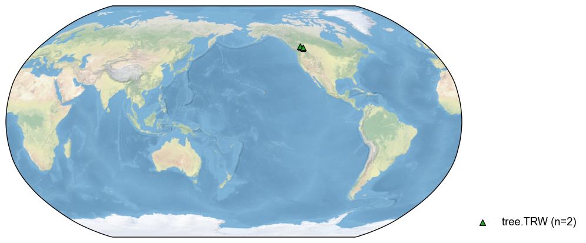
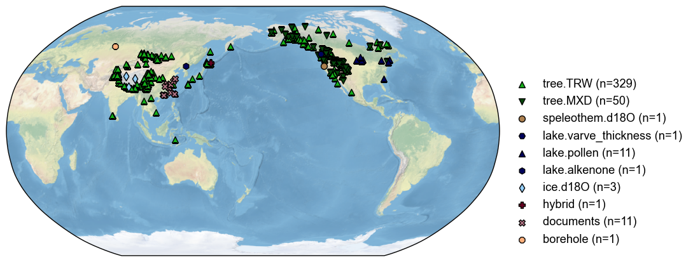
[26]:
# by latitude
pdb_sub = pdb.filter(by='lat', keys=[10, 45])
fig, ax = pdb_sub.plot(plot_count=False)

[27]:
# by longitude
pdb_sub = pdb.filter(by='lon', keys=[100, 145])
fig, ax = pdb_sub.plot(plot_count=False)

[28]:
# by location in a square
pdb_sub = pdb.filter(by='loc-square', keys=[10, 45, 100, 145])
fig, ax = pdb_sub.plot(plot_count=False)
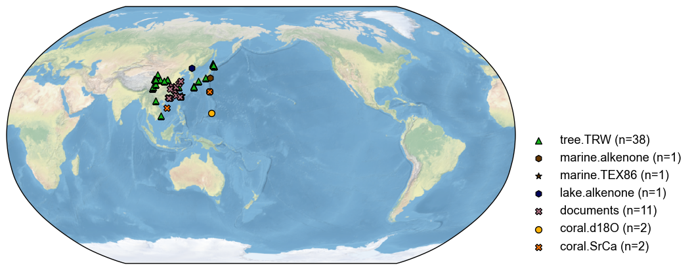
[29]:
# by location in a circle
pdb_sub = pdb.filter(by='loc-circle', keys=[15, 100, 3000])
fig, ax = pdb_sub.plot(plot_count=False)
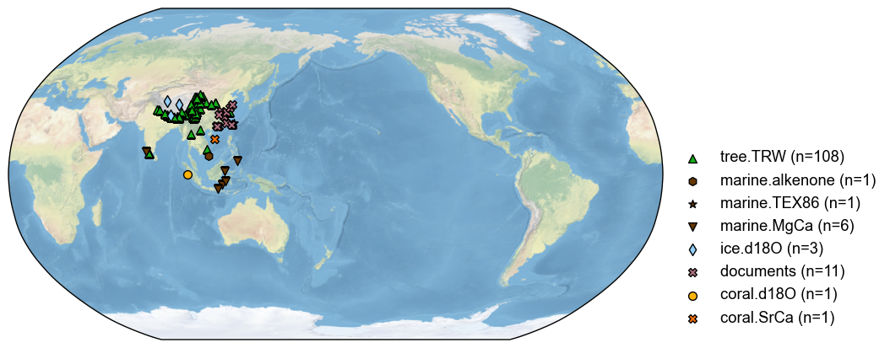
[31]:
# by tag
# make tags
for pid, pobj in pdb.records.items():
if 'NAm' in pid:
pobj.tags = {'selected N'}
pdb_sub = pdb.filter(by='tag', keys=['selected N'])
fig, ax = pdb_sub.plot(plot_count=False)
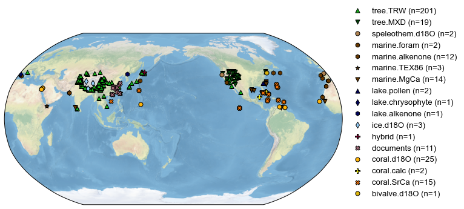
[34]:
## by resolution
pdb_sub = pdb.filter(by='dt', keys=[1.1, 10])
fig, ax = pdb_sub.plot(plot_count=False)
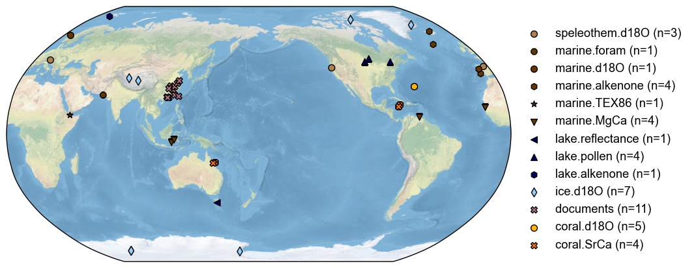
[35]:
# combination
pdb_sub = pdb.filter(by='pid', keys=['NAm', 'Asi']).filter(by='ptype', keys=['tree.TRW', 'tree.MXD']).filter(by='lat', keys=[10, 45])
fig, ax = pdb_sub.plot(plot_count=False)
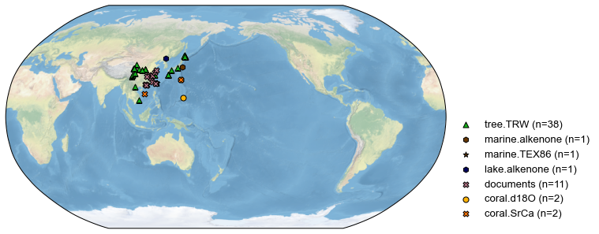